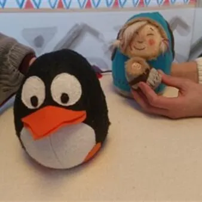

dom 15 nov · dalle 16:00
FILA A TEATRO 2026-2027- XII edizione: NELL'IGLOO . Storia di un pinguino
NELL'IGLOO - STORIA DI UN PINGUINO Un’esperienza immersiva tra ghiaccio, amicizia e piccoli grandi passi. Tra i ghiacci vive un pinguino che ha paura di nuotare, mentre i suoi amici scivolano e si tuff ano felici nelle acque gelide a pescare, lui resta a guardare con la pancia…
 Indicazioni
Indicazioni
- Costi e prenotazioni
- Costo non indicato · Prenotazione non indicata
- Programma
- Programma da verificare. Apri la fonte ufficiale per orari e possibili aggiornamenti.
- In caso di maltempo
- Nessuna indicazione specifica pubblicata.
- Note
- Acquisito automaticamente dalla fonte.
L’EVENTO
Descrizione completa
FILA A TEATRO 2026 – 2027
XII edizione, da ottobre 2026 a marzo 2027
Fila a Teatro prosegue il suo viaggio e approda nei teatri, e non solo, con 17 spettacoli per ragazzi e famiglie. Non mancano le proposte dedicate ai piccolissimi con 3 appuntamenti. In calendario 5 prime regionali, compagnie da diverse regioni italiane e giovani talenti, laboratori interattivi, eventi dedicati, incontri curiosi e tante sorprese…
Un progetto ricco e articolato, che consente di dare continuità agli obiettivi centrali della rassegna: allentare il confine attore-spettatore, offrire spettacoli di atmosfera e momenti di interazione per crescere, imparare, meravigliarsi e costruire insieme nuovi immaginari .
L’approccio inclusivo, volto a ricevere e ospitare persone che presentano specifiche fragilità, caratterizza questa parte della rassegna che nel teatro di Zoppola avvia l’esperienza dell’accoglienza per il pubblico “sensibile” nel segno della cultura del rispetto, della cura e dell’ascolto.
NELL'IGLOO - STORIA DI UN PINGUINO Un’esperienza immersiva tra ghiaccio, amicizia e piccoli grandi passi. Tra i ghiacci vive un pinguino che ha paura di nuotare, mentre i suoi amici scivolano e si tuff ano felici nelle acque gelide a pescare, lui resta a guardare con la pancia che brontola dalla fame, ma un giorno, grazie all’incontro con una bambina, tutto cambierà. Lo spettacolo è interattivo e indaga i temi dell’amicizia, coraggio e generosità attraverso un racconto per immagini. I bambini, seduti a terra dentro la tenda igloo, saranno completamente immersi e coinvolti nella storia.
Regia : Roberto Pagura
Con : Anna Valerio e Chiara D’Agostini
Pupazzi : Carol Mosanghini
Accessori e oggetti : Roberto Pagura Età consigliata : 1 – 4 anni
Rivolto a gruppi di 20 persone per turno Posti limitati: si consiglia l’acquisto dei biglietti online
Per maggiori info: whatsapp 377 0985538
RASSEGNA PICCOLISSIMI
Scarica il programma completo
IL PROGRAMMA
Programma e orari
Appuntamenti raccolti dalle fonti elencate. Dove manca un orario, non è ancora disponibile in questa scheda.
Programma pubblicato
- Dal 2026-11-15 al 2026-11-15
INFORMAZIONI UTILI
Prima di partire
- Controllare la fonte prima di partire.
ORGANIZZAZIONE